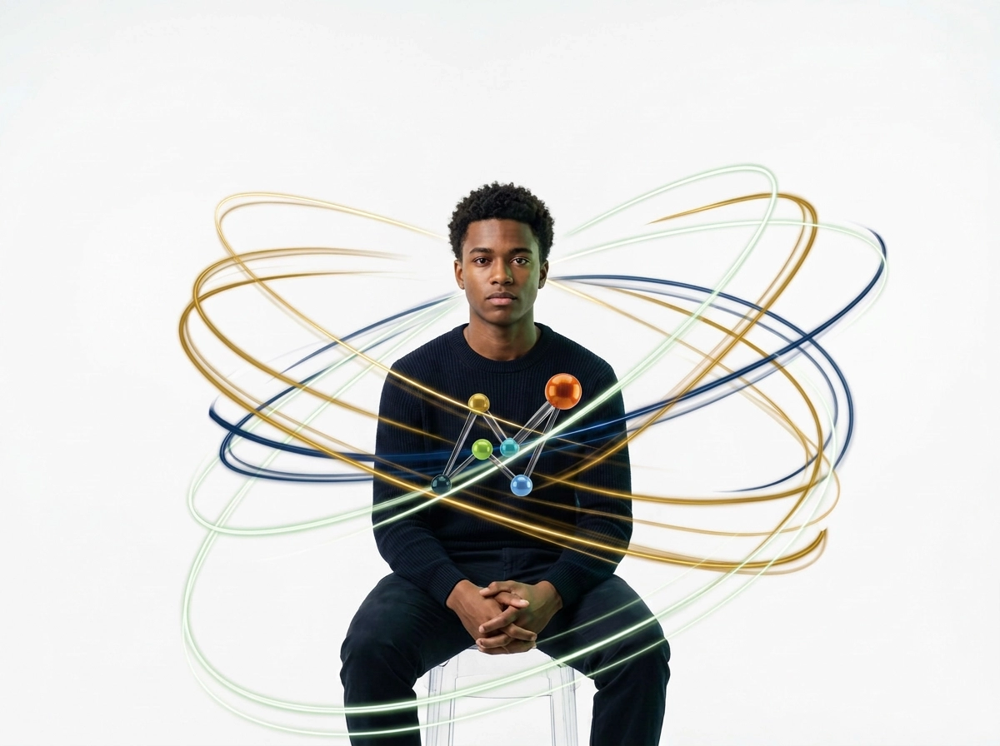
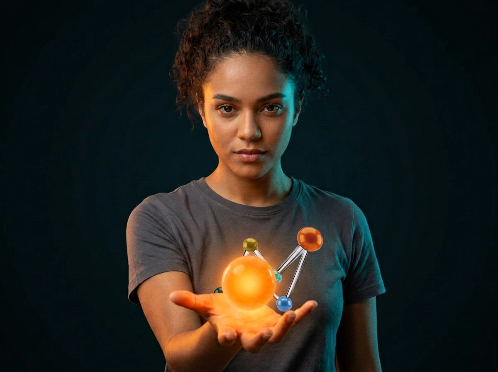

Núcleo 01 — O Despertar
Educação que abre portas para quem o mercado ainda não enxergou.
O Instituto Nucleon-line leva capacitação profissional online e acessível a jovens, mulheres e populações vulneráveis de todo o Brasil — direto no celular, onde quer que você esteja.
Núcleo 02 — Sobre o Instituto
Quem somos
O Instituto Nucleon-line de Educação e Capacitação é uma organização do terceiro setor, sem fins lucrativos, sediada em Palmas – Tocantins, formalmente constituída (CNPJ 44.265.605/0001-32). Atuamos na oferta de cursos livres de capacitação profissional e preparatórios, com foco em inclusão social por meio da educação.

Núcleo 03 — O Projeto Enobrecer Brasil
O Projeto Enobrecer Brasil
O Enobrecer Brasil é o projeto de capacitação do Instituto Nucleon-line que leva educação profissional a esse público por meio de uma plataforma 100% adaptada para dispositivos móveis, com linguagem acessível e conteúdo prático.
Núcleo 04 — Cursos
Cursos
São mais de 180 cursos livres, organizados em diversas áreas, para você aprender no seu tempo, no seu celular, de onde estiver.
Núcleo 05 — Impacto Social
Impacto Social
Cada aluno formado representa uma família com mais oportunidades e uma comunidade mais forte. Veja o que estamos construindo juntos.
Núcleo 06 — Apoie o Instituto
Apoie o Instituto
Sua contribuição transforma vidas. Ajude o Instituto Nucleon-line a levar educação de qualidade a quem mais precisa.
Núcleo 07 — Transparência
Transparência
A confiança de doadores, parceiros e da sociedade é a base do nosso trabalho. Por isso, mantemos nossa documentação institucional e financeira acessível.
Núcleo 08 — Blog / Notícias
Blog / Notícias
Acompanhe as novidades do Instituto Nucleon-line: novas turmas, parcerias fechadas, participação em editais e histórias de impacto.

Núcleo 09 — Contato
Contato
Quer saber mais sobre o Instituto Nucleon-line, tirar dúvidas sobre os cursos ou propor uma parceria? Fale com a gente.